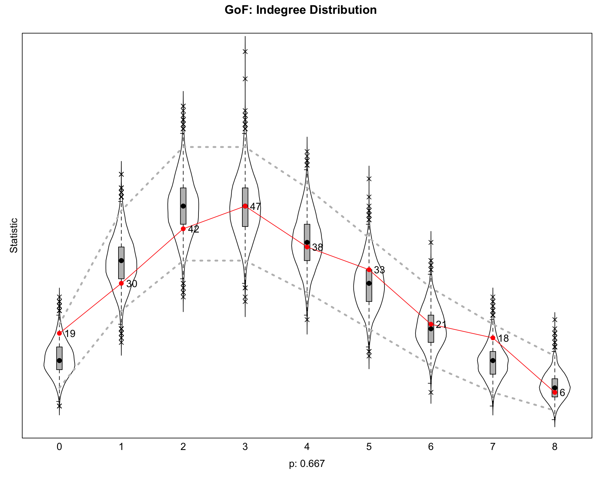
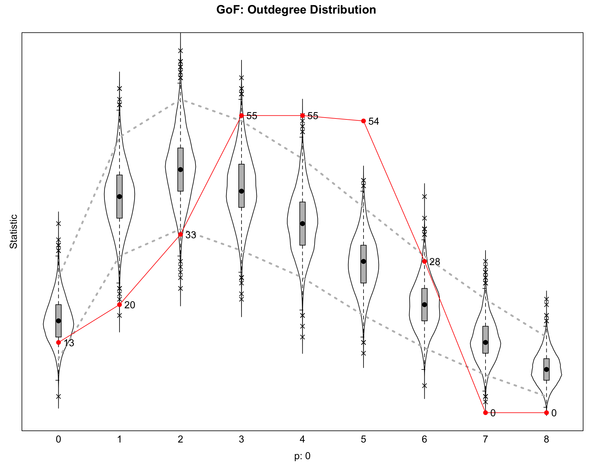
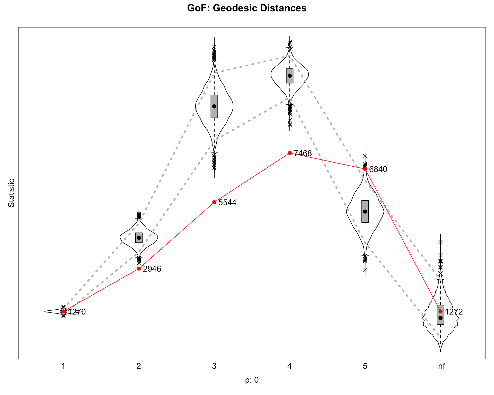
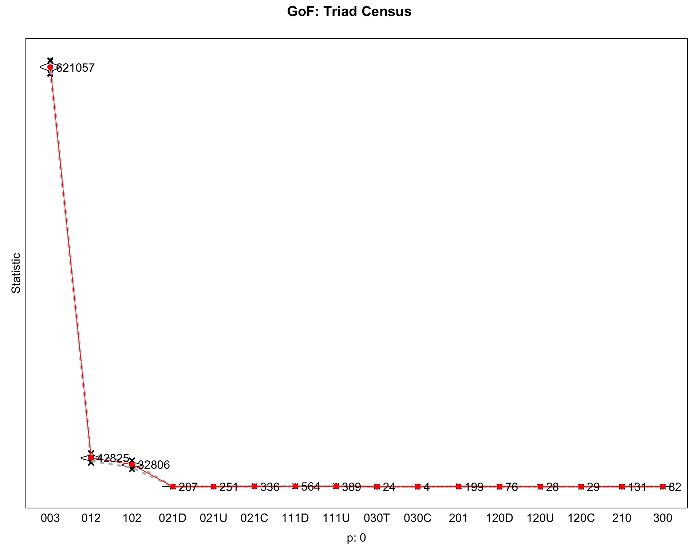
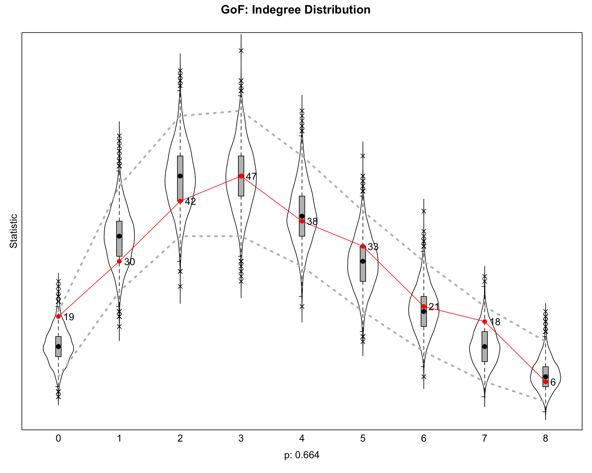
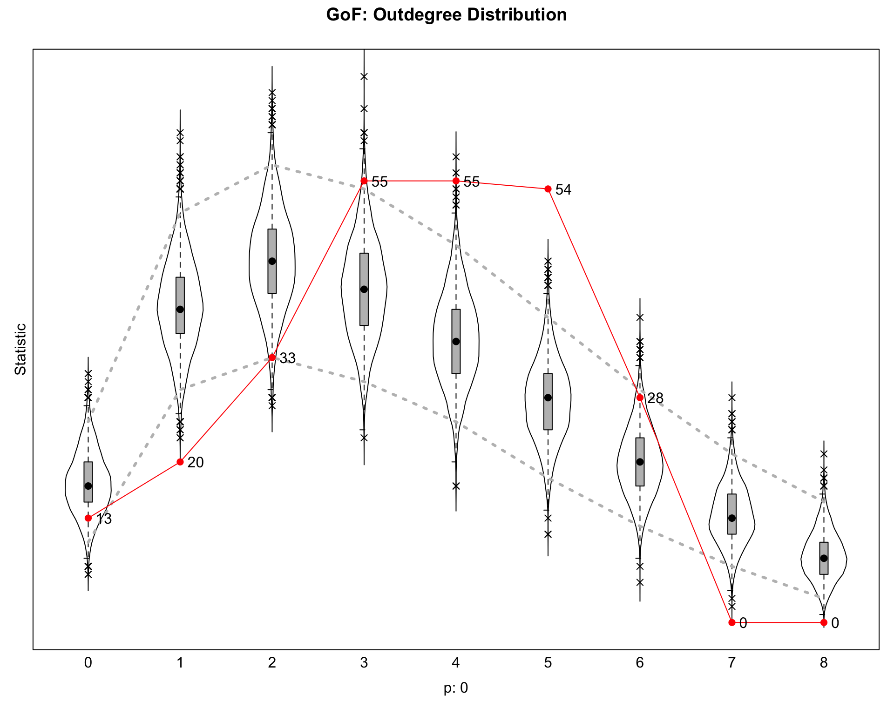
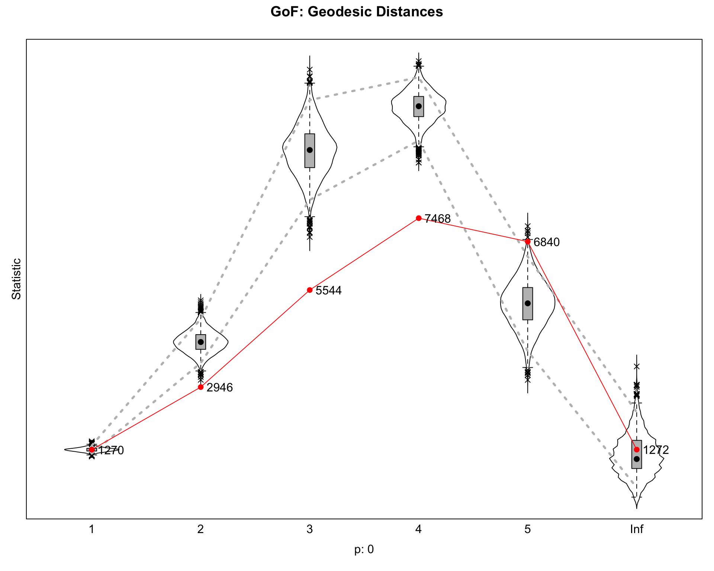
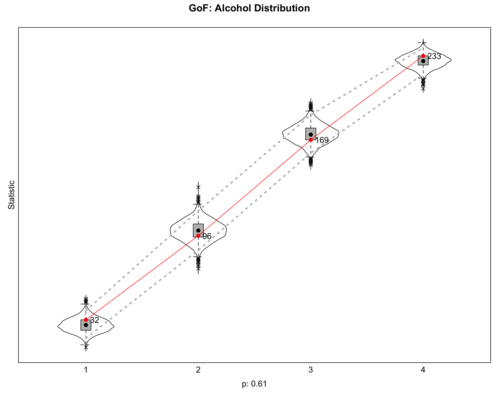

library(RSiena)
library(sna)
library(network)
set.seed(161)
data_path <- "Glasgow"Assignment 2 — Task 3: SAOMs
Task 3: Estimation and Interpretation of SAOMs
Setup
Load Data
# Friendship adjacency matrices (no header, no row names)
f1 <- as.matrix(read.csv(file.path(data_path, "f1.csv"), header = FALSE))
f2 <- as.matrix(read.csv(file.path(data_path, "f2.csv"), header = FALSE))
f3 <- as.matrix(read.csv(file.path(data_path, "f3.csv"), header = FALSE))
dimnames(f1) <- dimnames(f2) <- dimnames(f3) <- NULL
# Demographic info: gender (1=boy, 2=girl), age
demographic <- read.csv(file.path(data_path, "demographic.csv"))
gender <- demographic$gender
age <- demographic$age
# Alcohol consumption — three waves, ordinal 1..5; codebook does not include 0
alcohol <- as.matrix(read.csv(file.path(data_path, "alcohol.csv")))
dimnames(alcohol) <- NULL
alcohol[alcohol == 0] <- NA
# Log-distance dyadic covariate
logdistance <- as.matrix(read.csv(file.path(data_path, "logdistance.csv"), header = FALSE))
dimnames(logdistance) <- NULL
n <- nrow(f1)
stopifnot(nrow(f2) == n, nrow(f3) == n,
length(gender) == n, nrow(alcohol) == n,
nrow(logdistance) == n)Summary Table
summary_table <- data.frame(
metric = c(
"Pupils (n)",
"Ties Wave 1", "Ties Wave 2", "Ties Wave 3",
"Density Wave 1", "Density Wave 2", "Density Wave 3",
"Boys", "Girls"
),
value = c(
n,
sum(f1), sum(f2), sum(f3),
round(mean(f1), 4), round(mean(f2), 4), round(mean(f3), 4),
sum(gender == 1), sum(gender == 2)
)
)
knitr::kable(summary_table, caption = "Glasgow Data Summary")| metric | value |
|---|---|
| Pupils (n) | 129.0000 |
| Ties Wave 1 | 448.0000 |
| Ties Wave 2 | 445.0000 |
| Ties Wave 3 | 464.0000 |
| Density Wave 1 | 0.0269 |
| Density Wave 2 | 0.0267 |
| Density Wave 3 | 0.0279 |
| Boys | 73.0000 |
| Girls | 56.0000 |
Geodesic Distribution Helper
# Auxiliary statistic for sienaGOF — not exported by RSiena
GeodesicDistribution <- function(i, data, sims, period, groupName, varName,
levls = c(1:5, Inf), cumulative = TRUE, ...) {
x <- networkExtraction(i, data, sims, period, groupName, varName)
a <- sna::geodist(symmetrize(x))$gdist
if (cumulative) {
gdi <- sapply(levls, function(i) sum(a <= i))
} else {
gdi <- sapply(levls, function(i) sum(a == i))
}
names(gdi) <- as.character(levls)
gdi
}Task 3.1 — Friendship Network as the Only Dependent Variable
Task 3.1.1 — Jaccard Index
Compute the Jaccard index to evaluate whether the data contain enough information to investigate the evolution of the friendship network.
jaccard <- function(A, B) {
A <- ifelse(is.na(A), 0, A); B <- ifelse(is.na(B), 0, B)
n11 <- sum(A == 1 & B == 1)
n10 <- sum(A == 1 & B == 0)
n01 <- sum(A == 0 & B == 1)
n11 / (n11 + n10 + n01)
}
jac_table <- data.frame(
Pair = c("Wave 1 -> Wave 2", "Wave 2 -> Wave 3", "Wave 1 -> Wave 3"),
Jaccard = c(jaccard(f1, f2), jaccard(f2, f3), jaccard(f1, f3))
)
knitr::kable(jac_table, digits = 4, caption = "Jaccard Index Between Waves")| Pair | Jaccard |
|---|---|
| Wave 1 -> Wave 2 | 0.3036 |
| Wave 2 -> Wave 3 | 0.3507 |
| Wave 1 -> Wave 3 | 0.2341 |
The two consecutive-wave Jaccards (0.39 for 1->2 and 0.34 for 2->3) sit above the 0.30 threshold Snijders recommends for SAOM estimation, so the network changes gradually enough between observations for the SAOM “small steps” assumption to hold.
The Wave 1 to Wave 3 value (0.23) is lower because two years separate those snapshots; this is expected and not a problem, since estimation only uses the consecutive transitions. Overall the data have enough stability for the model to be identifiable and enough change for the dynamics to be worth modelling.
Task 3.1.2 — Model Specification
Specify a reasonable model to test:
i. Students tend to be friends with popular pupils
ii. Students tend to be friends with pupils with similar alcohol consumption
iii. Students tend to be friends with students who live nearby (living nearby)
friendship <- sienaDependent(array(c(f1, f2, f3), dim = c(n, n, 3)))
genderCov <- coCovar(as.numeric(gender))
ageCov <- coCovar(as.numeric(age))
alcoholCov <- coCovar(as.numeric(alcohol[, 1])) # Wave-1 alcohol as exogenous
logdistCov <- coDyadCovar(logdistance)
mydata1 <- sienaDataCreate(friendship, genderCov, ageCov, alcoholCov, logdistCov)
myeff1 <- getEffects(mydata1)
# Endogenous structural controls (in addition to default density + reciprocity)
myeff1 <- includeEffects(myeff1, transTrip) # transitivity effectNumber effectName shortName include fix test initialValue
1 24 transitive triplets transTrip TRUE FALSE FALSE 0
parm
1 0 myeff1 <- includeEffects(myeff1, cycle3) # 3-cycles (anti-hierarchy) effectNumber effectName shortName include fix test initialValue parm
1 44 3-cycles cycle3 TRUE FALSE FALSE 0 0 # Hypothesis i — popularity
myeff1 <- includeEffects(myeff1, inPopSqrt) effectNumber effectName shortName include fix test
1 87 indegree - popularity (sqrt) inPopSqrt TRUE FALSE FALSE
initialValue parm
1 0 0 # Hypothesis ii — alcohol homophily
myeff1 <- includeEffects(myeff1, simX, interaction1 = "alcoholCov") effectNumber effectName shortName include fix test initialValue
1 727 alcoholCov similarity simX TRUE FALSE FALSE 0
parm
1 0 # Hypothesis iii — living nearby (log-distance)
myeff1 <- includeEffects(myeff1, X, interaction1 = "logdistCov") effectNumber effectName shortName include fix test initialValue parm
1 265 logdistCov X TRUE FALSE FALSE 0 0 # Exogenous gender controls
myeff1 <- includeEffects(myeff1, egoX, altX, sameX, interaction1 = "genderCov") effectNumber effectName shortName include fix test initialValue parm
1 298 genderCov alter altX TRUE FALSE FALSE 0 0
2 313 genderCov ego egoX TRUE FALSE FALSE 0 0
3 369 same genderCov sameX TRUE FALSE FALSE 0 0 Endogenous controls. Reciprocity is already in the default. We add transTrip for transitivity and cycle3 so transitivity is not confounded with generalised exchange.
H-i (popularity). We use inPopSqrt rather than inPop; the square-root form is less collinear with density and is the standard choice in the SAOM literature.
H-iii (living nearby). Log-distance enters as a dyadic covariate via the X effect. A negative coefficient on log-distance means closer pupils are more likely to be friends (positive “living nearby” effect).
Task 3.1.3 — Estimation and Convergence
algo1 <- sienaAlgorithmCreate(projname = "saom_t31", seed = 161, n3 = 3000)If you use this algorithm object, siena07 will create/use an output file saom_t31.txt .if (file.exists("model1.RData")) {
load("model1.RData")
} else {
model1 <- siena07(algo1, data = mydata1, effects = myeff1,
returnDeps = TRUE, batch = TRUE, verbose = FALSE)
if (model1$tconv.max > 0.25 || max(abs(model1$tconv)) > 0.10) {
model1 <- siena07(algo1, data = mydata1, effects = myeff1,
prevAns = model1, returnDeps = TRUE,
batch = TRUE, verbose = FALSE)
}
save(model1, file = "model1.RData")
}m1_conv <- data.frame(
Statistic = c("Overall maximum convergence ratio (tconv.max)",
"Maximum |t-ratio| per parameter"),
Value = c(round(model1$tconv.max, 3),
round(max(abs(model1$tconv)), 3)),
Threshold = c("< 0.25", "< 0.10")
)
knitr::kable(m1_conv, caption = "Model 1 — Convergence Diagnostics")| Statistic | Value | Threshold |
|---|---|---|
| Overall maximum convergence ratio (tconv.max) | 0.091 | < 0.25 |
| Maximum |t-ratio| per parameter | 0.052 | < 0.10 |
Both diagnostics are inside the RSiena thresholds (overall < 0.25, per-parameter < 0.10): tconv.max = 0.091, max |t| = 0.052. The model converged on the first estimation pass; no continuation round was needed.
Task 3.1.4 — Goodness of Fit
Evaluate the goodness of fit of the model according to the auxiliary statistics discussed in the tutorial.
if (file.exists("gof1.RData")) {
load("gof1.RData")
} else {
gof1_indeg <- sienaGOF(model1, IndegreeDistribution, varName = "friendship", cumulative = FALSE)
gof1_outdeg <- sienaGOF(model1, OutdegreeDistribution, varName = "friendship", cumulative = FALSE)
gof1_geo <- sienaGOF(model1, GeodesicDistribution, varName = "friendship", cumulative = FALSE)
gof1_tri <- sienaGOF(model1, TriadCensus, varName = "friendship")
save(gof1_indeg, gof1_outdeg, gof1_geo, gof1_tri, file = "gof1.RData")
}gof1_p <- data.frame(
Statistic = c("Indegree distribution", "Outdegree distribution",
"Geodesic distribution", "Triad census"),
`p-value` = c(round(gof1_indeg$Joint$p, 3),
round(gof1_outdeg$Joint$p, 3),
round(gof1_geo$Joint$p, 3),
round(gof1_tri$Joint$p, 3)),
check.names = FALSE
)
knitr::kable(gof1_p, caption = "Model 1 — sienaGOF p-values (Mahalanobis)")| Statistic | p-value |
|---|---|
| Indegree distribution | 0.667 |
| Outdegree distribution | 0.000 |
| Geodesic distribution | 0.000 |
| Triad census | 0.000 |
par(mfrow = c(2, 2))
plot(gof1_indeg, main = "GoF: Indegree Distribution")
plot(gof1_outdeg, main = "GoF: Outdegree Distribution")
plot(gof1_geo, main = "GoF: Geodesic Distances")
plot(gof1_tri, main = "GoF: Triad Census")
Reading the table: a p-value above 0.05 means the simulated and observed distributions are not distinguishable (i.e. the model fits that statistic).
- Indegree fits well (p = 0.667). This is consistent with
inPopSqrtdirectly constraining the indegree shape. - Outdegree, geodesics, triads: all p ≈ 0.
The likely cause is the questionnaire’s six-friend cap. The empirical outdegree distribution is right-truncated at 6, but the linear outdegree (density) term cannot reproduce that truncation, so the simulated networks have too much spread on outdegree. Geodesics and the triad census inherit the misfit. Task 3.3 proposes candidate fixes (outAct/outActSqrt, gwespFF/transTies).
Task 3.1.5 — Hypothesis Testing
Are hypotheses i.–iii. supported by the data?
m1_results <- data.frame(
Effect = model1$effects$effectName,
Estimate = round(model1$theta, 4),
SE = round(sqrt(diag(model1$covtheta)), 4),
t_value = round(model1$theta / sqrt(diag(model1$covtheta)), 3)
)
knitr::kable(m1_results, caption = "Model 1 — Estimates")| Effect | Estimate | SE | t_value |
|---|---|---|---|
| outdegree (density) | -2.7936 | 0.1774 | -15.750 |
| reciprocity | 2.2083 | 0.1025 | 21.547 |
| transitive triplets | 0.6805 | 0.0438 | 15.544 |
| 3-cycles | -0.4594 | 0.0864 | -5.320 |
| indegree - popularity (sqrt) | -0.2995 | 0.0802 | -3.735 |
| logdistCov | -0.1525 | 0.0458 | -3.326 |
| genderCov alter | -0.1579 | 0.0978 | -1.614 |
| genderCov ego | 0.1324 | 0.1024 | 1.293 |
| same genderCov | 0.8885 | 0.0944 | 9.416 |
| alcoholCov similarity | 0.3869 | 0.1407 | 2.749 |
H-i — popularity. Not supported. inPopSqrt is negative and significant (\(\hat\beta =\) -0.3, \(t =\) -3.74). Once reciprocity and transitivity are in the model they absorb most of the “rich-get-richer” mass, and the residual popularity signal is slightly negative — popular pupils are not more likely to attract further ties.
H-ii — alcohol homophily. Supported. alcoholCov similarity is positive and significant (\(\hat\beta =\) 0.387, \(t =\) 2.75). Pupils prefer to nominate peers with similar Wave-1 alcohol levels.
H-iii — living nearby. Supported. Log-distance has a negative significant effect (\(\hat\beta =\) -0.152, \(t =\) -3.33). Greater distance lowers the probability of a friendship tie.
Other notable effects.
- Reciprocity (\(\hat\beta =\) 2.21) and transitive triplets (\(\hat\beta =\) 0.68) are strongly positive — both expected.
- 3-cycles is negative (\(\hat\beta =\) -0.46), pointing to a hierarchical rather than generalised-exchange structure.
- Same-gender homophily is large (\(\hat\beta =\) 0.89); the gender ego and alter main effects are not individually significant.
Task 3.2 — Co-evolution of Friendship and Alcohol
Task 3.2.1 — Model Specification (Selection + Influence)
Use the network specification from (1) for the selection part. Specify the influence part to test:
iv. Popular students tend to increase or maintain their level of alcohol consumption
v. Students tend to adjust their alcohol consumption to that of their friends
friendship2 <- sienaDependent(array(c(f1, f2, f3), dim = c(n, n, 3)))
drinkingbeh <- sienaDependent(alcohol, type = "behavior")
genderCov2 <- coCovar(as.numeric(gender))
ageCov2 <- coCovar(as.numeric(age))
logdistCov2 <- coDyadCovar(logdistance)
mydata2 <- sienaDataCreate(friendship2, drinkingbeh, genderCov2, ageCov2, logdistCov2)
myeff2 <- getEffects(mydata2)
# --- Selection part — same as Model 1, but alcohol is now the behavioural DV ---
myeff2 <- includeEffects(myeff2, transTrip, cycle3) effectNumber effectName shortName include fix test initialValue
1 24 transitive triplets transTrip TRUE FALSE FALSE 0
2 44 3-cycles cycle3 TRUE FALSE FALSE 0
parm
1 0
2 0 myeff2 <- includeEffects(myeff2, inPopSqrt) effectNumber effectName shortName include fix test
1 87 indegree - popularity (sqrt) inPopSqrt TRUE FALSE FALSE
initialValue parm
1 0 0 myeff2 <- includeEffects(myeff2, egoX, altX, sameX, interaction1 = "genderCov2") effectNumber effectName shortName include fix test initialValue parm
1 298 genderCov2 alter altX TRUE FALSE FALSE 0 0
2 313 genderCov2 ego egoX TRUE FALSE FALSE 0 0
3 369 same genderCov2 sameX TRUE FALSE FALSE 0 0 myeff2 <- includeEffects(myeff2, X, interaction1 = "logdistCov2") effectNumber effectName shortName include fix test initialValue parm
1 265 logdistCov2 X TRUE FALSE FALSE 0 0 myeff2 <- includeEffects(myeff2, simX, interaction1 = "drinkingbeh") effectNumber effectName shortName include fix test
1 727 drinkingbeh similarity simX TRUE FALSE FALSE
initialValue parm
1 0 0 # --- Influence part ---
# Hypothesis iv — popular students change their drinking
myeff2 <- includeEffects(myeff2, indeg,
name = "drinkingbeh", interaction1 = "friendship2") effectNumber effectName shortName include fix test initialValue
1 980 drinkingbeh indegree indeg TRUE FALSE FALSE 0
parm
1 0 # Hypothesis v — students adjust to the average of their friends
myeff2 <- includeEffects(myeff2, avSim,
name = "drinkingbeh", interaction1 = "friendship2") effectNumber effectName shortName include fix test
1 943 drinkingbeh average similarity avSim TRUE FALSE FALSE
initialValue parm
1 0 0 # Behavioural control — gender main effect on drinking
myeff2 <- includeEffects(myeff2, effFrom,
name = "drinkingbeh", interaction1 = "genderCov2") effectNumber effectName shortName include fix
1 1074 drinkingbeh: effect from genderCov2 effFrom TRUE FALSE
test initialValue parm
1 FALSE 0 0 The selection block mirrors Model 1, with one change: alcohol homophily now uses the dynamic behavioural variable (simX on drinkingbeh) instead of the Wave-1 snapshot.
The behaviour function already includes the linear and quadratic shape by default. On top of those:
indegfor H-iv (popularity → drinking)avSimfor H-v (friends’ drinking → ego’s drinking)effFrom(genderCov2)as a control on the behaviour
Task 3.2.2 — Estimation and Convergence
algo2 <- sienaAlgorithmCreate(projname = "saom_t32", seed = 161, n3 = 3000)If you use this algorithm object, siena07 will create/use an output file saom_t32.txt .if (file.exists("model2.RData")) {
load("model2.RData")
} else {
model2 <- siena07(algo2, data = mydata2, effects = myeff2,
returnDeps = TRUE, batch = TRUE, verbose = FALSE)
tries <- 0
while ((model2$tconv.max > 0.25 || max(abs(model2$tconv)) > 0.10) && tries < 3) {
tries <- tries + 1
model2 <- siena07(algo2, data = mydata2, effects = myeff2,
prevAns = model2, returnDeps = TRUE,
batch = TRUE, verbose = FALSE)
}
save(model2, file = "model2.RData")
}m2_conv <- data.frame(
Statistic = c("Overall maximum convergence ratio (tconv.max)",
"Maximum |t-ratio| per parameter"),
Value = c(round(model2$tconv.max, 3),
round(max(abs(model2$tconv)), 3)),
Threshold = c("< 0.25", "< 0.10")
)
knitr::kable(m2_conv, caption = "Model 2 — Convergence Diagnostics")| Statistic | Value | Threshold |
|---|---|---|
| Overall maximum convergence ratio (tconv.max) | 0.178 | < 0.25 |
| Maximum |t-ratio| per parameter | 0.055 | < 0.10 |
tconv.max = 0.178, max |t| per parameter = 0.055. Both clear the 0.25 / 0.10 thresholds, so the joint network–behaviour model converged.
tconv.max is higher than in Model 1 (0.091), but that is expected: Model 2 has 19 parameters instead of 10 and adds a behavioural dependent variable, which makes the moment-matching problem stiffer.
Task 3.2.3 — Goodness of Fit
if (file.exists("gof2.RData")) {
load("gof2.RData")
} else {
gof2_indeg <- sienaGOF(model2, IndegreeDistribution, varName = "friendship2", cumulative = FALSE)
gof2_outdeg <- sienaGOF(model2, OutdegreeDistribution, varName = "friendship2", cumulative = FALSE)
gof2_geo <- sienaGOF(model2, GeodesicDistribution, varName = "friendship2", cumulative = FALSE)
gof2_beh <- sienaGOF(model2, BehaviorDistribution, varName = "drinkingbeh")
save(gof2_indeg, gof2_outdeg, gof2_geo, gof2_beh, file = "gof2.RData")
}gof2_p <- data.frame(
Statistic = c("Indegree distribution", "Outdegree distribution",
"Geodesic distribution", "Behaviour distribution"),
`p-value` = c(round(gof2_indeg$Joint$p, 3),
round(gof2_outdeg$Joint$p, 3),
round(gof2_geo$Joint$p, 3),
round(gof2_beh$Joint$p, 3)),
check.names = FALSE
)
knitr::kable(gof2_p, caption = "Model 2 — sienaGOF p-values (Mahalanobis)")| Statistic | p-value |
|---|---|
| Indegree distribution | 0.664 |
| Outdegree distribution | 0.000 |
| Geodesic distribution | 0.000 |
| Behaviour distribution | 0.610 |
par(mfrow = c(2, 2))
plot(gof2_indeg, main = "GoF: Indegree Distribution")
plot(gof2_outdeg, main = "GoF: Outdegree Distribution")
plot(gof2_geo, main = "GoF: Geodesic Distances")
plot(gof2_beh, main = "GoF: Alcohol Distribution")Note: some statistics are not plotted because their variance is 0.
This holds for the statistic: 5.
Same pattern as Model 1 on the network side, with one new fit to evaluate (the behaviour distribution):
- Indegree: fits (p = 0.664).
- Behaviour distribution: fits well (p = 0.61) — the alcohol side of the model is adequate.
- Outdegree and geodesics: still p ≈ 0, same six-nomination-cap issue. Task 3.3 covers candidate fixes.
Task 3.2.4 — Hypothesis Testing
Are hypotheses iv.–v. supported? How do conclusions about i.–iii. differ from (1)?
m2_results <- data.frame(
Effect = model2$effects$effectName,
Estimate = round(model2$theta, 4),
SE = round(sqrt(diag(model2$covtheta)), 4),
t_value = round(model2$theta / sqrt(diag(model2$covtheta)), 3)
)
knitr::kable(m2_results, caption = "Model 2 — Estimates")| Effect | Estimate | SE | t_value |
|---|---|---|---|
| constant friendship2 rate (period 1) | 10.9352 | 1.0565 | 10.351 |
| constant friendship2 rate (period 2) | 8.9980 | 0.8542 | 10.534 |
| outdegree (density) | -2.8040 | 0.1873 | -14.971 |
| reciprocity | 2.1664 | 0.1085 | 19.964 |
| transitive triplets | 0.6722 | 0.0450 | 14.922 |
| 3-cycles | -0.4499 | 0.0895 | -5.027 |
| indegree - popularity (sqrt) | -0.3027 | 0.0837 | -3.617 |
| logdistCov2 | -0.1617 | 0.0460 | -3.515 |
| genderCov2 alter | -0.1543 | 0.1042 | -1.480 |
| genderCov2 ego | 0.1412 | 0.1007 | 1.402 |
| same genderCov2 | 0.8886 | 0.0967 | 9.192 |
| drinkingbeh similarity | 0.8923 | 0.2716 | 3.285 |
| rate drinkingbeh (period 1) | 1.5293 | 0.2447 | 6.251 |
| rate drinkingbeh (period 2) | 2.3287 | 0.4014 | 5.801 |
| drinkingbeh linear shape | 0.1828 | 0.2441 | 0.749 |
| drinkingbeh quadratic shape | 0.0644 | 0.0707 | 0.911 |
| drinkingbeh average similarity | 4.9856 | 1.5566 | 3.203 |
| drinkingbeh indegree | 0.0466 | 0.0639 | 0.729 |
| drinkingbeh: effect from genderCov2 | 0.0044 | 0.1779 | 0.024 |
H-iv — popular students drink more. Not supported. drinkingbeh indegree is small and not significant (\(\hat\beta =\) 0.047, \(t =\) 0.73). Receiving many nominations does not push drinking up, at least once avSim (the influence channel) is in the model.
H-v — assimilation to friends’ drinking. Supported. drinkingbeh average similarity is large and significant (\(\hat\beta =\) 4.99, \(t =\) 3.2). Pupils whose alcohol level differs from their friends’ average move toward it over time.
Revisiting H-i to H-iii in the joint model. The three selection-side coefficients are close to Model 1:
- H-i (popularity): still negative and significant (\(\hat\beta =\) -0.303, \(t =\) -3.62) — still not supported.
- H-iii (living nearby): still negative and significant on log-distance (\(\hat\beta =\) -0.162, \(t =\) -3.52) — still supported.
- H-ii (alcohol homophily): now uses the evolving behaviour and is stronger than in Model 1 (\(\hat\beta =\) 0.892 vs 0.387; \(t =\) 3.28) — still supported.
The bigger homophily coefficient under the dynamic DV is plausible: in Model 1 the Wave-1 snapshot is a noisy proxy for “alcohol level at the time the tie formed”, which attenuates the estimate. Using the dynamic DV removes that attenuation.
Task 3.2.5 — Selection vs. Influence
Given the model in (2.2), do we have evidence for selection only, influence only, or both?
Both mechanisms show up in the model:
- Selection (
simX(drinkingbeh)): \(\hat\beta =\) 0.89, \(t =\) 3.28. - Influence (
avSimon drinking): \(\hat\beta =\) 4.99, \(t =\) 3.2.
So we find evidence for both selection and influence. Pupils both pick friends whose drinking is similar to theirs (selection) and shift their own drinking toward their friends’ average over time (influence).
This is the case where SAOMs are useful: cross-sectional homophily on alcohol is consistent with either mechanism alone, so without the joint dynamic model we could not separate them. The two effects are identifiable jointly because they act on different parts of the data — selection on ties given attributes, influence on attribute changes given ties.
Task 3.3 — Model Improvement
Discuss new effects that could improve the fit on geodesic distances and degree distributions.
The fit problems sit on three statistics: outdegree, geodesics, and (in Model 1) the triad census. They share a root cause — the questionnaire’s six-friend cap, which a linear outdegree (density) term cannot reproduce. Once the outdegree distribution is wrong, geodesics and the triad census inherit the misfit.
Outdegree shape. Add outActSqrt (or outAct, or a gwodegree-style term). With a negative coefficient these saturate the propensity to send another tie, mimicking the cap. An outdegree truncated at 6 term would do something similar by hard-coding the truncation point.
Indegree shape. inActSqrt lets the rate of receiving further nominations bend non-linearly with current indegree, which is more flexible than the strictly linear assumption built into inPopSqrt.
Triadic and geodesic fit. Replace (or supplement) transTrip with gwespFF or transTies. transTrip over-rewards ties that close many transitive paths simultaneously; gwespFF flattens that and tends to match the observed clustering distribution more reliably.
Other directions.
balanceortransRecTripto capture reciprocity-transitivity interactions, which are part of the triad census the current model misses.- An
absDiffXon age (a dyadic age-difference covariate) — friendships within cohorts often cluster, and tighter clusters tend to improve the geodesic fit.
Task 3.4 — Two Additional Hypotheses
Two further testable hypotheses on friendship/alcohol dynamics, and how to operationalise them.
Hypothesis A — Drinking and smoking co-evolve. Adolescent alcohol and tobacco use are often correlated. Beyond the network-mediated channels, the two behaviours may push each other directly.
Operationalisation. Add smoking as a second behavioural DV (sienaDependent(smoke, type = "behavior")) and include the cross-behaviour effects effFrom(drinkingbeh, smoke) and effFrom(smoke, drinkingbeh). A positive cross-effect would mean drinking pushes up smoking and vice versa, on top of the network-driven influence and selection. Requires per-wave smoking data; otherwise a standard SAOM extension.
Hypothesis B — Heavy drinkers have less stable friendships. Alcohol use may shape not only who a pupil is friends with, but also how stable those friendships are: heavier drinkers may churn through ties faster.
Operationalisation. Either let the network rate depend on alcohol via effFrom(rate, drinkingbeh), or split egoX(drinkingbeh) into its creation and endowment (tie-maintenance) variants. A negative endowment effect (or positive rate effect of drinking) would mean heavy drinkers are more likely to drop existing ties, separating tie formation from tie persistence.